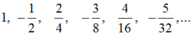
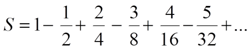

Пример: найти сумму всех
элементов последовательности:
 
которые по модулю больше 0,001:


Алгоритм:

Модулем (или абсолютной величиной) числа называется величина, равная ему, если оно неотрицательное, и равная противоположному к нему, если число отрицательное. ABS(число)
Блок-схема решения:

Блок-схема решения
Решение на Паскале:

Решение на Паскале
Дано натуральное число N. Найти сумму первой и последней цифры этого числа
var a,c1,c2:int64;
begin
write('Введите исходное число => ');
readln(a);
c1:=a mod 10;
if a>9 then
while a>0 do
begin
c2:=a;
a:=a div 10;
end;
write('Сумма первой и последней цифры = ',c1+c2);
end.
Покупатель должен заплатить в кассу S руб. У него есть купюры номиналом: 1,2,5,10,50,100,500. Сколько купюр разного номинала отдаст покупатель, если он начинает платить с самых крупных?
Решение задачи:
var s,k500,k100,k50,k10,k5,k2,k1:integer;
begin
read (s);
while s>0 do
begin
if s>=500 then begin k500:=k500+1; s:=s-500;end else
if s>=100 then begin k100:=k100+1; s:=s-100;end else
if s>=50 then begin k50:=k50+1; s:=s-50;end else
if s>=10 then begin k10:=k10+1; s:=s-10;end else
if s>=5 then begin k5:=k5+1; s:=s-5;end else
if s>=2 then begin k2:=k2+1; s:=s-2;end else
if s>=1 then begin k1:=k1+1;s:=s-1;end;
end;
writeln('Купюра 500 - ',k500);
writeln('Купюра 100 - ',k100);
writeln('Купюра 50 - ',k50);
writeln('Купюра 10 - ',k10);
writeln('Купюра 5 - ',k5);
writeln('Купюра 2 - ',k2);
writeln('Купюра 1 - ',k1);
end.